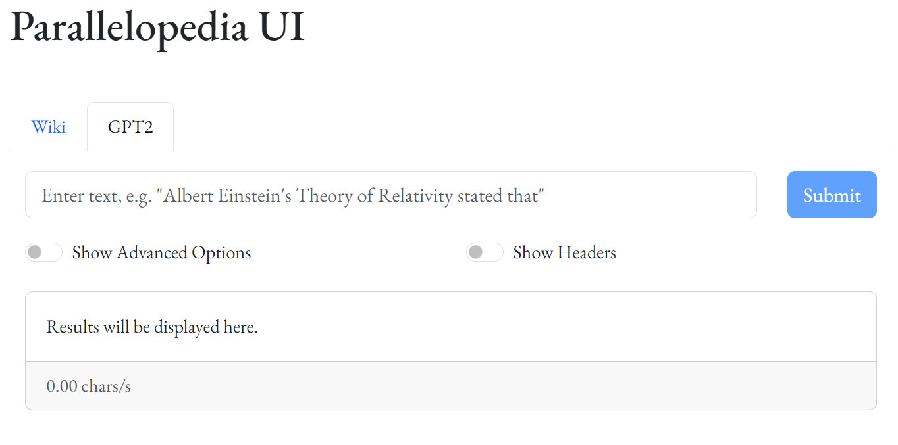
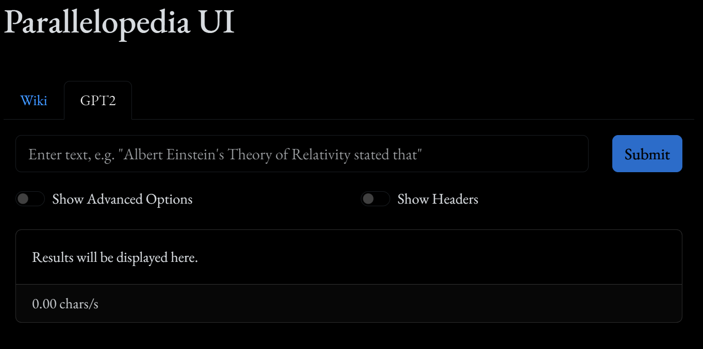

This blog post explores multi-threaded PyTorch parallel inference via an asyncio-based HTTP server and the new No-GIL free-threaded Python, using a (predominantly-AI-written) simple React Bootstrap web interface. We capture what is currently possible, what type of issues are typically encountered, and what the roadmap may look like for the future.
Author
Trent Nelson
This blog post is sponsored in part by Meta in collaboration with Quansight and OpenTeams.
Introduction
Python 3.13, released in October 2024, is the first version of Python to introduce support for a “no-GIL” free-threaded mode, per PEP-703 Making the Global Interpreter Lock Optional in CPython, unlocking the ability for multiple Python threads to run simultaneously.
This allows, for the first time since the language’s inception in December 1989, a single Python process to saturate all CPU cores in parallel with pure Python code (i.e. not farming out to extension modules written in C, C++, or, more recently, Rust).
A handful of the motivations captured in that PEP opine on how the GIL impedes Python AI workflows, particularly as it relates to GPU programming.
This blog post explores what can be done with PyTorch now with the new free-threaded version of Python, specifically focusing on run-time inference on transformer-based generative models. Using a simple React Bootstrap web interface for the front-end, a pure-Python asyncio-based multi-threaded HTTP server is used to facilitate multi-threaded, simultaneous parallel model inference.
Getting Started
All of this work was done on Linux (Ubuntu 22.04) with Python 3.13t, PyTorch 2.6, and CUDA 12.6. I would have liked to get Windows support working too, but unfortunately, the multi-threaded asyncio-based HTTP server I wrote for Linux doesn’t appear to leverage multiple threads on Windows. (From a cursory inspection, it appears to be an issue either with event loops not getting created properly on non-main-thread threads, or a more insidious issue with how the IocpProactor() code uses I/O completion ports.)
Environments
In general, I endeavored to minimize the number of external library dependencies as best I could. The primary reason for this is that a lot of the modern Python AI stack isn’t yet compatible with Python free-threaded builds, unfortunately. This is improving at a rapid pace, though.
Anything written in Rust is particularly problematic, as PyO3 (Rust bindings for Python) only recently supported free-threaded Python 3.13+ as of 0.23.3, which was released early December, 2025, and a lot of projects haven’t yet updated to it (like TikToken and Pydantic). Other common projects like lxml aren’t compatible yet either, which means you can’t simply do pip install llama-stack and start playing around. Likewise for transformers and other parts of the HuggingFace stack.
I will reference two conda environments in this post: a Python 3.13 free-threaded one named py313t, and a normal, not-free-threaded Python 3.13 one named py313.
The primary motivation behind the second py313 environment is it allows us to install Jupyter Lab, which, at the time of writing, still isn’t compatible with a Python free-threaded installation. However, we can still register a free-threaded Python kernel with Jupyter, which is all we really care about when running the code in this post in a free-threaded environment.
Details on creating the conda environments follow.
Free-Threaded 3.13 Env (py313t)
I use conda to create the Python 3.13 free-threaded environment plus initial dependencies, activate it, then install the remaining dependencies via pip, as follows:
nodejs is required for the UI component we’ll introduce later. regex, rust, and setuptools_rust are needed for tiktoken, described next. Finally, numpy is for torch, which we install later, too.
TikToken
TikToken is a fast BPE tokenizer from OpenAI that is used extensively in the emerging Python LLM landscape. At the time of writing, the latest TikToken release was 0.8.0, which was built against PyO3 0.22.2, which isn’t compatible with free-threaded Python.
Thankfully, it was trivial to get a local installation of tiktoken working by cloning the Github repo, bumping the PyO3 version in Cargo.toml, then rebuilding and installing.
Note
This is a perfect example of the type of fiddling around I wanted to avoid by not depending on any external packages other than the bare necessities, such as PyTorch. I made an exception for tiktoken because a) it’s arguably an equally-important part of the LLM stack as torch, and b) it thankfully wasn’t too difficult getting a compatible version of tiktoken installed locally.
Clone the tiktoken git repo and cd into it as follows:
After this, you should be able to import the tiktoken module in Python:
% cd ..% python -Xgil=0Python 3.13.1 experimental free-threading build |packaged by conda-forge |(main, Jan 13 2025, 09:59:40)[GCC 13.3.0] on linuxType"help", "copyright", "credits" or "license" for more information.>>> import tiktoken>>>
Torch
Install PyTorch 2.6 via pip with the conda py313t environment active:
If you have trouble installing PyTorch, consult their Getting Started guide.
You can verify torch installed correctly as follows:
% python -Xgil=0Python 3.13.1 experimental free-threading build |packaged by conda-forge |(main, Jan 13 2025, 09:59:40)[GCC 13.3.0] on linuxType"help", "copyright", "credits" or "license" for more information.>>> import torch>>> torch.cuda.is_available()True
IPython Kernel
Installing IPython Kernel allows us to use our free-threaded Python installation via the Jupyter Lab instance we install in the py313 environment.
datrie is a Python library that provides a trie (or digital search tree) data structure by way of the libdatrie C library. The Python datrie library isn’t strictly necessary to run parallelopedia.gpt2, but other components rely on it, so it’s handy to get installed now, if possible.
It relies upon Cython, and thus, for now, you need to install a free-threaded compatible version of Cython first, as follows:
If everything goes well, you should see something like this when you launch Python and import datrie:
% pythonPython 3.13.1 experimental free-threading build |packaged by conda-forge |(main, Jan 13 2025, 09:59:40)[GCC 13.3.0] on linuxType"help", "copyright", "credits" or "license" for more information.>>> import datrie>>>
Normal 3.13 Env (py313)
The second py313 environment is almost identical to py313t, except it is not a python-freethreading installation, and, additionally, we install Jupyter Lab. We can install tiktoken directly via pip, so we don’t need the supporting Rust cruft. Likewise for datrie, we don’t need to first install Cython and then build datrie from git.
All of the code in this article is available in the Parallelopedia repository on Github. The code we’ll be focusing on in this post lives in the parallelopedia.gpt2 module.
Clone the repository as follows:
git clone https://github.com/tpn/parallelopedia
The code and command examples in this post will assume you’ve added the src directory to your PYTHONPATH, the bin directory to your PATH, and set the PARALLELOPEDIA_ROOT environment variable to the root of the repository. You can do this as follows:
cd parallelopediaexportPYTHONPATH=$(pwd)/src:$PYTHONPATHexportPATH=$(pwd)/bin:$PATHexportPARALLELOPEDIA_ROOT=$(pwd)
You can perform a quick sanity check that things are working as follows:
% python -Xgil=0 -m parallelopedia.http.server --helpusage: server.py [-h] [--ip IP] [--port PORT] [--debug] [--log-level {DEBUG,INFO,WARNING,ERROR,CRITICAL}] [--threads THREADS] [--protocol-class PROTOCOL_CLASS] [--app-classes APP_CLASSES [APP_CLASSES ...]] [--listen-backlog LISTEN_BACKLOG]Run the HTTP server.options:-h,--help show this help message and exit--ip IP IP address to bind the server to.--port PORT Port number to bind the server to.--debug Enable debug mode for asyncio.--log-level{DEBUG,INFO,WARNING,ERROR,CRITICAL}Set the logging level.--threads THREADS Number of threads to use.--protocol-class PROTOCOL_CLASSThe protocol class to use for the server.--app-classes APP_CLASSES [APP_CLASSES ...]Space-separated list of HTTP application classes.--listen-backlog LISTEN_BACKLOGThe listen backlog for the server.
Parallelopedia Web Interface
The React Bootstrap web interface lives in the Parallelopedia-UI repository.
Note
Full disclaimer: I’m not a web developer. I don’t know JavaScript, React, or Bootstrap, or anything else in the modern web stack. So, like any modern developer in 2025, when faced with needing to whip up something in an area I am not proficient, I farm it all out to AI—either ChatGPT, local LLMs via LM Studio, or, more recently, Aider.
Both the py313t and py313 environments included nodejs, so with either of them active, you should be able to change into that directory and run npm run start to start up the web interface:
conda activate py313cd parallelopedia-uinpm run start
That should launch a browser automatically to http://localhost:3000/, which should have a GPT2 tab that, when selected, looks something like this:

Parallelopedia UI Example
The dark version’s contrast is a little too dark for my liking. Just use the light version until it bugs me enough to fix.
Parallelopedia UI Example

Parallelopedia UI Example
PyTorch and LLM Crash Course
My involvement with PyTorch and Large Language Models (LLMs) started around late November last year, 2024. Going in, I knew nothing about PyTorch, nor deep neural networks, nor LLMs—other than having enjoyed using LLMs thoroughly the past couple of years. I had never trained an AI model of any kind. I did have a bit of NumPy and data science exposure up my sleeve, plus general familiarity with Python.
Thanks to Andrej Karpathy’s phenomenal YouTube series on deep neural networks and LLMs titled Neural Networks: From Zero to Hero, over the course of about 3 weeks or so I went from zero to… well I wouldn’t necessarily say hero—perhaps zero to not-completley-clueless level of understanding of how LLMs work.
Andrej’s content is a fantastic resource to learn everything you need to know to understand how modern LLMs work from the ground-up. It’s not a short series—there’s 19 hours, 21 minutes and two seconds of content across ten videos—and you’ll probably spend double that if you really want to have the content sink in.
None of the work presented in this post would have been possible had I not invested the time in Andrej’s series. If you’re reading this Andrej, thanks, and keep up the brilliant work!
Training GPT-2 (124M) Locally
Equipped with my new knowledge about LLMs, PyTorch, and, thanks to Andrej’s final video in the series titled Let’s reproduce GPT-2 (124M) and the accompanying build-nanogpt Github repo, I was able to train a local GPT-2 model via PyTorch, from scratch, using the edu_fineweb10B dataset.
I only had to make one change in order to run locally: Use 8 for micro batch size instead of 64. With that change in place, I was able to train GPT-2 from scratch as follows:
% conda activate py313% git clone gh:tpn/build-nanogpt% cd build-nanogpt# Download the fineweb dataset.% python fineweb.py# Train!% torchrun --standalone--nproc_per_node=4 train_gpt2.py
This was run on an NVIDIA DGX workstation from 2017, which has an Intel Xeon(R) CPU E5-2698 v4 @ 2.20GHz (20 cores, 40 threads), and four Tesla V100-DGXS-32GB GPUs.
Training in parallel across all four GPUs yielded around 36,000 tokens/sec, with an average time of about 14.5 seconds per loop iteration. Training took about 3 days and 5 hours for 19,072 steps. All four GPUs were pegged close to their 300W power limit for those three days.
Note
Amusingly, well after the fact, I decided to see what kind of training performance I’d get on my Windows 11 gaming box (via WSL2 and Ubuntu 22.04), which has an AMD Ryzen 9 7950X3D (16 cores, 32 threads) and NVIDIA RTX 4090. Training via python train_gpt2.py (torchrun wasn’t needed as I wasn’t using multiple GPUs) yielded about 45,000 tokens/sec, which is a nice bump, but what was most impressive was the reduction to the loop iteration duration, which averaged out to about 180ms!
So, I could have completed the same training process in about an hour or so, at a vastly reduced impact on my electricity bill that month :-)
Once training completes, a log/model_19072.pt file is produced, which is the checkpoint of the model at that final step, obtained via a call to torch.save(). The model has 124M parameters—which is tiny by modern standards—and is just under 500MB on disk.
You can download that very model I trained via the HuggingFace dataset I set up here: model_19072.pt. Once downloaded, place the file in $PARALLELOPEDIA_ROOT/data; alternatively, if you run the Jupyter Notebook below, it’ll automatically download the model from HuggingFace on first run.
PyTorch GPT-2 Implementation
Let’s introduce the first version of the Python code we’re going to use. Again, all of this has been made possible thanks to Andrej Karpathy’s work with his YouTube series and build-nanogpt repo, so any and all code you see in this post can typically be traced back to something equivalent that appears in train_gpt2.py. None of this code would have made any sense to me a month or two ago—but I can promise you that if you devote sufficient time to watching and understanding the entire series, you’ll have a comprehensive understanding of all of the pieces present in this post.
You can follow along in a Jupyter Lab notebook if you activate the py313 environment and launch jupyter lab. If you correctly registered your py313t kernel per the instructions earlier, you should see an option when creating a new notebook to use the py313t Python kernel, which will be the free-threaded version. On the right of this page you should see all of the notebooks referenced.
First Version
The code below roughly corresponds to my first version of the code in the commit 3ed4fe6: Add gpt2.py, with some formatting and style tweaks to ensure the code is viewable on mobile devices without requiring horizontal scrolling.
There are a number of deficiencies in this code, which we’ll address in subsequent versions. For now, it’s a good starting point to get a feel for how we can use PyTorch to load a GPT-2 model checkpoint, tokenize some input text, and generate some output text.
Code
# gpt2_v1.ipynb# ===================================================================# Imports# ===================================================================import dataclassesfrom dataclasses import dataclassimport loggingimport osfrom os.path import join, existsimport subprocessfrom textwrap import wrapimport timeimport tiktokenimport torchimport torch.nn as nnfrom torch.nn import functional as F# ===================================================================# Helper Timer Class# ===================================================================class ElapsedTimer:""" Context manager and reusable timer to measure elapsed time. Example: timer = elapsed_timer() with timer: do_something() print(f'Elapsed: {timer.elapsed:.3f}') # Re-enterable: with timer: do_something_else() print(f'Elapsed: {timer.elapsed:.3f}') """def__init__(self):self.start =Noneself._elapsed =Nonedef__enter__(self):self.start = time.perf_counter()returnselfdef__exit__(self, exc_type, exc_value, traceback):self._elapsed = time.perf_counter() -self.start@propertydef elapsed(self):""" Return the elapsed time for the most recent context. """ifself._elapsed isNone:raiseValueError("Timer has not been used in a context yet.")returnself._elapsed# ===================================================================# Globals# ===================================================================LOG_LEVEL ='DEBUG'PARALLELOPEDIA_ROOT = os.environ['PARALLELOPEDIA_ROOT']PARALLELOPEDIA_DATA_DIR = join(PARALLELOPEDIA_ROOT, 'data')MODEL_CHECKPOINT = join( PARALLELOPEDIA_DATA_DIR,'model_19072.pt',)MODEL_DOWNLOAD_URL = ("https://huggingface.co/datasets/trentnelson/""parallelopedia-data-gpt2/resolve/main/model_19072.pt")# Download the model from huggingface if necessary.os.makedirs(PARALLELOPEDIA_DATA_DIR, exist_ok=True)ifnot exists(MODEL_CHECKPOINT):print(f'Downloading {MODEL_DOWNLOAD_URL} via wget ''this might take a while...') args = ["wget","--quiet", MODEL_DOWNLOAD_URL,"-P", PARALLELOPEDIA_DATA_DIR, ] timer = ElapsedTimer()with timer: subprocess.run(args, check=True)print(f'Downloaded model in {timer.elapsed:.3f} seconds.')assert exists(MODEL_CHECKPOINT), "Missing checkpoint."# ===================================================================# Logging# ===================================================================logging.basicConfig( level=getattr(logging, LOG_LEVEL),format='%(asctime)s - %(levelname)s - %(message)s',)# ===================================================================# Setup# ===================================================================# Use bfloat16 for matmul precision where possible.torch.set_float32_matmul_precision('high')# ===================================================================# GPT2 PyTorch Model Components# ===================================================================# Now define the classes making up our GPT2 implementation.# These map directly to the components introduced by the# now-seminal 2017 "Attention Is All You Need" paper.class CausalSelfAttention(nn.Module):""" Causal self-attention for the GPT2 model. """def__init__(self, config):super().__init__()assert config.n_embd % config.n_head ==0# Key, query, value projections for all heads, but in a batch.self.c_attn = nn.Linear(config.n_embd, 3* config.n_embd)# Output projection.self.c_proj = nn.Linear(config.n_embd, config.n_embd)self.c_proj.NANOGPT_SCALE_INIT =1# Regularization.self.n_head = config.n_headself.n_embd = config.n_embddef forward(self, x):# Batch size, sequence length, embedding dimensionality. B, T, C = (x.size())# Calculate query, key, values for all heads in# batch and move head forward to be the batch dim.## N.B. nh is "number of heads", hs is "head size",# and C (number of channels) is nh * hs.# E.g. in GPT-2 (124M), n_head=12, hs=64, so# nh*hs=C=768 channels in the Transformer. qkv =self.c_attn(x) q, k, v = qkv.split(self.n_embd, dim=2) head_dim = C //self.n_head# (B, nh, T, hs) k = k.view(B, T, self.n_head, head_dim).transpose(1, 2)# (B, nh, T, hs) q = q.view(B, T, self.n_head, head_dim).transpose(1, 2)# (B, nh, T, hs) v = v.view(B, T, self.n_head, head_dim).transpose(1, 2)# Flash attention. y = F.scaled_dot_product_attention(q, k, v, is_causal=True)# Re-assemble all head outputs side by side. y = (y.transpose(1, 2).contiguous().view(B, T, C))# Output projection. y =self.c_proj(y)return yclass MLP(nn.Module):""" Multi-layer perceptron for the GPT2 model. """def__init__(self, config):super().__init__()self.c_fc = nn.Linear(config.n_embd, 4* config.n_embd)self.gelu = nn.GELU(approximate='tanh')self.c_proj = nn.Linear(4* config.n_embd, config.n_embd)self.c_proj.NANOGPT_SCALE_INIT =1def forward(self, x): x =self.c_fc(x) x =self.gelu(x) x =self.c_proj(x)return xclass Block(nn.Module):""" Transformer block for the GPT2 model. """def__init__(self, config):super().__init__()self.ln_1 = nn.LayerNorm(config.n_embd)self.attn = CausalSelfAttention(config)self.ln_2 = nn.LayerNorm(config.n_embd)self.mlp = MLP(config)def forward(self, x): x = x +self.attn(self.ln_1(x)) x = x +self.mlp(self.ln_2(x))return x# ===================================================================# GPT2 Supporting Classes# ===================================================================# N.B. These differ slightly from Andrej's classes in# `train_gpt2.py`. `GPTCheckpoint` is a helper# class I wrote that has no analog in the former.@dataclassclass GPTConfig:""" Configuration class for GPT model. Attributes: block_size (int): Maximum sequence length. vocab_size (int): Number of tokens. GPT2 from huggingface has a vocab size of 50257, which includes 50,000 BPE merges, 256 byte tokens, and 1 <|endoftext|> token. However, Andrej Karpathy's `build-nanogpt/train_gpt2.py` uses a vocab size of 50304. I vaguely recall the explanation for this discrepancy as a local optimization to yield better alignment sizes, but I'm not 100% certain. The local GPT2 training that we did on edu_fineweb10b used 50304, so we will use that here. n_layer (int): Number of layers. n_head (int): Number of attention heads. n_embd (int): Embedding dimension. """ block_size: int=1024 vocab_size: int=50304 n_layer: int=12 n_head: int=12 n_embd: int=768# ===================================================================# GPT2 Model Implementation# ===================================================================class GPT(nn.Module):def__init__(self, config, device):super().__init__()self.config = configself.device = deviceself.manual_seed =42self.transformer = nn.ModuleDict(dict( wte=nn.Embedding(config.vocab_size, config.n_embd), wpe=nn.Embedding(config.block_size, config.n_embd), h=nn.ModuleList( [Block(config) for _ inrange(config.n_layer)] ), ln_f=nn.LayerNorm(config.n_embd), ) )self.lm_head = nn.Linear( config.n_embd, config.vocab_size, bias=False )self.transformer.wte.weight =self.lm_head.weightself.apply(self._init_weights)def _init_weights(self, module):ifisinstance(module, nn.Linear): std =0.02ifhasattr(module, "NANOGPT_SCALE_INIT"): std *= (2*self.config.n_layer) **-0.5 torch.nn.init.normal_(module.weight, mean=0.0, std=std)if module.bias isnotNone: torch.nn.init.zeros_(module.bias)elifisinstance(module, nn.Embedding): torch.nn.init.normal_(module.weight, mean=0.0, std=0.02)def forward(self, idx, targets=None):""" Forward pass of the GPT model. Args: idx (torch.Tensor): Supplies the input tensor of shape (B, T). targets (torch.Tensor): Optionally supplies the target tensor of shape (B, T) for computing the loss. """ (B, T) = idx.size()# Forward the token and position embeddings.# Shape (T) pos = torch.arange(0, T, dtype=torch.long, device=idx.device)# Position embeddings of shape (T, n_embd). pos_emb =self.transformer.wpe(pos)# Token embeddings of shape (B, T, n_embd). tok_emb =self.transformer.wte(idx) x = tok_emb + pos_emb# Forward the blocks of the transformer.for block inself.transformer.h: x = block(x)# Forward the final layernorm and the classifier. x =self.transformer.ln_f(x)# (B, T, vocab_size) logits =self.lm_head(x) loss =Noneif targets isnotNone: loss = F.cross_entropy( logits.view(-1, logits.size(-1)), targets.view(-1) )return (logits, loss)@classmethoddef from_local_pretrained( cls, model_path: str, map_location: str="cuda" ):""" Load a model from a local checkpoint. N.B. This is a new method based off GPT.from_pretrained in Andrej Karpathy's train_gpt2.py. Args: cls (type): Supplies the class type. model_path (str): Supplies the path to the model checkpoint. map_location (str): Supplies the device to which the model will be mapped. """with torch.serialization.safe_globals([GPTConfig]): checkpoint = torch.load( model_path, map_location=map_location, ) config = checkpoint["config"] config = GPTConfig(**checkpoint["config"]) model = cls(config, device=map_location) model.load_state_dict(checkpoint["model"]) model.eval() msg = (f"Loaded model from step {checkpoint['step']}, "f"val_loss {checkpoint['val_loss']}" ) logging.info(msg)return modeldef generate(self, text: str, max_length: int=1024, top_k: int=50, seed: int=None, ) ->str:""" Generate text from the model. N.B. This is a new method based off the generation code present in Andrej Karpathy's train_gpt2.py. Args: text (str): Supplies the prompt. max_length (int): Supplies the maximum total length, including prompt. top_k (int): Supplies the number of tokens to consider at each generation step. seed (int): Optionally supplies the manual seed to use for the generator. If None, the model's manual seed will be used. Returns: str: The generated text (including the initial prompt). """self.eval() device =self.device# Obtain our GPT2 tokenizer, and resolve the stop token. enc = tiktoken.get_encoding("gpt2") stop_string ='<|endoftext|>' stop_token = enc.n_vocab -1 actual = enc.decode([stop_token])assert actual == stop_string, (f"expected {stop_string}, got {actual}" )# Encode the prompt. tokens = enc.encode(text) x = torch.tensor( tokens, dtype=torch.long, device=device ).unsqueeze(0)# Create a random generator for reproducibility.if seed isNone: seed =self.manual_seed sample_rng = torch.Generator(device=device) sample_rng.manual_seed(seed)# Generate tokens up to our max length, or until we hit the# stop token. start = time.perf_counter() count =0while x.size(1) < max_length: count +=1with torch.no_grad():# Forward pass, ignoring the returned loss. (logits, _) =self(x)# Take the logits at the last time-step (shape:# (1, vocab_size)). logits = logits[:, -1, :]# Convert to probabilities. probs = F.softmax(logits, dim=-1)# Top-k sampling. topk_probs, topk_indices = torch.topk( probs, k=top_k, dim=-1 )# Sample the next token. next_idx = torch.multinomial( topk_probs, num_samples=1, generator=sample_rng ) next_token = torch.gather(topk_indices, -1, next_idx)# If the next token is the stop token, we're done.if next_token.item() == stop_token:break# Otherwise, append the token to the current sequence# and continue generation. x = torch.cat((x, next_token), dim=1) end = time.perf_counter() elapsed = end - start tokens_per_sec =float(count) / elapsed msg = (f'Generated {count} tokens in {elapsed:.2f} seconds 'f'({tokens_per_sec:.2f} tokens/sec)' ) logging.debug(msg)# Decode the output tokens and return the generated text,# including the initial prompt. output_tokens = x[0].tolist()return enc.decode(output_tokens)
Once we’ve got a model instance, text can be generated by simply calling the model’s generate() function with a prompt, and, optionally, some additional parameters like seed and max length. This is also referred to as inference—the two terms are interchangeable, and mean the same thing: the act of providing some input tokens—your prompt—to your trained model, and having it generate tokens in response.
Note that this isn’t a chat or instruction model, nor has it been fine-tuned to remotely resemble something actually usable. So you can’t ask it questions or have it write code for you.
What you can do, though, is provide it with a half written sentence, and then laugh at the ridiculous content it generates in response. Although note that its syntax is pretty good—the model has clearly learned enough during training about how the English language is structured, which words make sense when placed together, that sort of thing. It just has no clue about underlying semantics.
prompt ="Albert Einstein's Theory of Relativity stated that"result = model.generate(prompt, seed=42)print('\n'.join(wrap(result, width=105)))
Albert Einstein's Theory of Relativity stated that the speed of light was approximately 10 000 of
parsecs, whereas quantum physicists have suggested that, as we move further into the universe, the
universe might grow older. The new experiment, conducted by researchers at the University of New Jersey,
New York, and the University of California, Berkeley shows that photons travelling at the speed of light
will be around 30 to 65 kilometres per second.
prompt ="Albert Einstein's Theory of Relativity stated that"result = model.generate(prompt, seed=42)print('\n'.join(wrap(result, width=58)))
Albert Einstein's Theory of Relativity stated that the
speed of light was approximately 10 000 of parsecs,
whereas quantum physicists have suggested that, as we move
further into the universe, the universe might grow older.
The new experiment, conducted by researchers at the
University of New Jersey, New York, and the University of
California, Berkeley shows that photons travelling at the
speed of light will be around 30 to 65 kilometres per
second.
prompt ="Albert Einstein's Theory of Relativity stated that"result = model.generate(prompt, seed=42)print('\n'.join(wrap(result, width=45)))
Albert Einstein's Theory of Relativity stated
that the speed of light was approximately 10
000 of parsecs, whereas quantum physicists
have suggested that, as we move further into
the universe, the universe might grow older.
The new experiment, conducted by researchers
at the University of New Jersey, New York,
and the University of California, Berkeley
shows that photons travelling at the speed of
light will be around 30 to 65 kilometres per
second.
Now, it’s worth noting at this point that a 124 million parameter GPT2 model, trained from scratch for 19,072 iterations on the edu_fineweb10b data set, with a final loss score of 3.052, is, quite frankly, hot garbage :-)
Do not be expecting output from this model to rival anything close to what you’d expect from a contemporary LLM. In fact, we can’t even rely on it to even remotely generate content that is factual in nature. It spews hot probabilisitic garbage that mostly conforms to the structure of the English language.
But at least it’s our hot garbage that we trained from nothing, and it’s all we need to start playing around with generating text in parallel.
Hot Garbage Example
Provide a slightly different seed to the prompt above and you’ll precisely see some hot garbage generation in action. In the following example, with an identical prompt as the one prior, it just streams nonsense until hitting its max token limit, nary a stop token in sight.
result = model.generate(prompt, seed=20190903)print('\n'.join(wrap(result, width=100)))
Albert Einstein's Theory of Relativity stated that the speed of light is the same as it is in two
places, which means that a given speed can either be described by two different speed equations
directly or they may be both equations. It is then assumed that the speed of light is the speed of
the universe or the universe's existence relative to Earth. In relativity, a measure of the speed of
light is the absolute speed of the light. As long as the speed of light is less than its speed in
two different places, the absolute speed can be calculated. For example, the absolute speed is
1/2990000000 (2,299,792,458) km/hr with an absolute speed about 10 times as fast as it is in two
different places. Now we can use the following equation to describe the speed of light: E = C/C2 The
speed of light, as a function of C, is a constant. By Einstein's definition of relativity, the speed
of light is a constant. This is because light travels at its maximum speed along the direction (if
it's travelling above the speed of light, the point where light must be observed is called
"aperture" of the speed of light). The speed of light is about half as fast as the speed of light
because the speed of light has a smaller varying velocity for each direction of radiation. The speed
of light, as a function of C, is a constant. The speed of a wave is the constant measured along the
direction of the wave relative to its location in space. E = C/C2 where E is the speed of light
along the direction of the wave. Because the speed of the wave is the speed of the particle in the
wave, and c the speed of the particle, E's is also given by the speed of light. For example, a light
particle is moving from its place of greatest velocity to its location of greatest velocity. E.g. C
= F/d, C = d/d For most materials and most other objects, the speed of light is the same for all
wavelengths. The speed of light is, on the other hand, the speed of the energy form of a photon.
E.g. c = C/d, C = e/d For most particles, light travels over one degree of separation and this is
how photons interact with other particles. We can compare a particle's velocity to an object's
velocity. The speed of light is measured by the distance between the particle's nose and the surface
of the object. For example, a photon of light emits the energy of a single photon. If a photon of
another type is fired at the same speed as the first, it will get out of the light, but a photon of
the other type will not get back to the ground. The fractional energy will be reduced. The distance
between two photons of the same type will be reduced to the square of their energies. E.g. C = C/C2,
C = -D/d., D = 9/6 A photon of color does not have sufficient energy to be emitted by that color and
is therefore subject to The speed of light is the change in velocity over time. This is a constant,
but sometimes it is possible to express it like this: E = c2/e In relativity, the length of the
distance is the length of time the length of wave is divided by the speed of light. E.g. a beam of
light travelling at about 9.2 miles per second must travel at around 7.3 miles per second to get
E.g. a beam moving at 3.2 miles per second must travel at around 8 miles per second to get E.g. a
beam moving at 1.8 miles per second must travel at 9.0 miles per second to get E.g. an object going
at 2.3 miles per second must travel at 1.8 miles per second to get E.g. a beam moving at 2.3 miles
per second must travel at 3.4 miles per second to get E.g.. a beam traveling at 3.4 miles per second
to get E.g.. a beam moving at 2.3 miles per second must travel at 3.8 miles per second to get E.g..
a beam traveling at 3.8 miles per second to get E.g.. a beam moving at about 4.4 miles per second
must travel at about 3.9 miles per second to get E.g.. a beam moving at 5.5 miles per second to get
a beam moving at 5.9 miles per S.G.D.. is the same thing as a mass. The distance is a unit in terms
of the speed of light. Determining the speed of light is an additional measure of the energy. For
most things
result = model.generate(prompt, seed=20190903)print('\n'.join(wrap(result, width=54)))
Albert Einstein's Theory of Relativity stated that the
speed of light is the same as it is in two places,
which means that a given speed can either be described
by two different speed equations directly or they may
be both equations. It is then assumed that the speed
of light is the speed of the universe or the
universe's existence relative to Earth. In relativity,
a measure of the speed of light is the absolute speed
of the light. As long as the speed of light is less
than its speed in two different places, the absolute
speed can be calculated. For example, the absolute
speed is 1/2990000000 (2,299,792,458) km/hr with an
absolute speed about 10 times as fast as it is in two
different places. Now we can use the following
equation to describe the speed of light: E = C/C2 The
speed of light, as a function of C, is a constant. By
Einstein's definition of relativity, the speed of
light is a constant. This is because light travels at
its maximum speed along the direction (if it's
travelling above the speed of light, the point where
light must be observed is called "aperture" of the
speed of light). The speed of light is about half as
fast as the speed of light because the speed of light
has a smaller varying velocity for each direction of
radiation. The speed of light, as a function of C, is
a constant. The speed of a wave is the constant
measured along the direction of the wave relative to
its location in space. E = C/C2 where E is the speed
of light along the direction of the wave. Because the
speed of the wave is the speed of the particle in the
wave, and c the speed of the particle, E's is also
given by the speed of light. For example, a light
particle is moving from its place of greatest velocity
to its location of greatest velocity. E.g. C = F/d, C
= d/d For most materials and most other objects, the
speed of light is the same for all wavelengths. The
speed of light is, on the other hand, the speed of the
energy form of a photon. E.g. c = C/d, C = e/d For
most particles, light travels over one degree of
separation and this is how photons interact with other
particles. We can compare a particle's velocity to an
object's velocity. The speed of light is measured by
the distance between the particle's nose and the
surface of the object. For example, a photon of light
emits the energy of a single photon. If a photon of
another type is fired at the same speed as the first,
it will get out of the light, but a photon of the
other type will not get back to the ground. The
fractional energy will be reduced. The distance
between two photons of the same type will be reduced
to the square of their energies. E.g. C = C/C2, C =
-D/d., D = 9/6 A photon of color does not have
sufficient energy to be emitted by that color and is
therefore subject to The speed of light is the change
in velocity over time. This is a constant, but
sometimes it is possible to express it like this: E =
c2/e In relativity, the length of the distance is the
length of time the length of wave is divided by the
speed of light. E.g. a beam of light travelling at
about 9.2 miles per second must travel at around 7.3
miles per second to get E.g. a beam moving at 3.2
miles per second must travel at around 8 miles per
second to get E.g. a beam moving at 1.8 miles per
second must travel at 9.0 miles per second to get E.g.
an object going at 2.3 miles per second must travel at
1.8 miles per second to get E.g. a beam moving at 2.3
miles per second must travel at 3.4 miles per second
to get E.g.. a beam traveling at 3.4 miles per second
to get E.g.. a beam moving at 2.3 miles per second
must travel at 3.8 miles per second to get E.g.. a
beam traveling at 3.8 miles per second to get E.g.. a
beam moving at about 4.4 miles per second must travel
at about 3.9 miles per second to get E.g.. a beam
moving at 5.5 miles per second to get a beam moving at
5.9 miles per S.G.D.. is the same thing as a mass. The
distance is a unit in terms of the speed of light.
Determining the speed of light is an additional
measure of the energy. For most things
result = model.generate(prompt, seed=20190903)print('\n'.join(wrap(result, width=40)))
Albert Einstein's Theory of Relativity
stated that the speed of light is the
same as it is in two places, which means
that a given speed can either be
described by two different speed
equations directly or they may be both
equations. It is then assumed that the
speed of light is the speed of the
universe or the universe's existence
relative to Earth. In relativity, a
measure of the speed of light is the
absolute speed of the light. As long as
the speed of light is less than its
speed in two different places, the
absolute speed can be calculated. For
example, the absolute speed is
1/2990000000 (2,299,792,458) km/hr with
an absolute speed about 10 times as fast
as it is in two different places. Now we
can use the following equation to
describe the speed of light: E = C/C2
The speed of light, as a function of C,
is a constant. By Einstein's definition
of relativity, the speed of light is a
constant. This is because light travels
at its maximum speed along the direction
(if it's travelling above the speed of
light, the point where light must be
observed is called "aperture" of the
speed of light). The speed of light is
about half as fast as the speed of light
because the speed of light has a smaller
varying velocity for each direction of
radiation. The speed of light, as a
function of C, is a constant. The speed
of a wave is the constant measured along
the direction of the wave relative to
its location in space. E = C/C2 where E
is the speed of light along the
direction of the wave. Because the speed
of the wave is the speed of the particle
in the wave, and c the speed of the
particle, E's is also given by the speed
of light. For example, a light particle
is moving from its place of greatest
velocity to its location of greatest
velocity. E.g. C = F/d, C = d/d For most
materials and most other objects, the
speed of light is the same for all
wavelengths. The speed of light is, on
the other hand, the speed of the energy
form of a photon. E.g. c = C/d, C = e/d
For most particles, light travels over
one degree of separation and this is how
photons interact with other particles.
We can compare a particle's velocity to
an object's velocity. The speed of light
is measured by the distance between the
particle's nose and the surface of the
object. For example, a photon of light
emits the energy of a single photon. If
a photon of another type is fired at the
same speed as the first, it will get out
of the light, but a photon of the other
type will not get back to the ground.
The fractional energy will be reduced.
The distance between two photons of the
same type will be reduced to the square
of their energies. E.g. C = C/C2, C =
-D/d., D = 9/6 A photon of color does
not have sufficient energy to be emitted
by that color and is therefore subject
to The speed of light is the change in
velocity over time. This is a constant,
but sometimes it is possible to express
it like this: E = c2/e In relativity,
the length of the distance is the length
of time the length of wave is divided by
the speed of light. E.g. a beam of light
travelling at about 9.2 miles per second
must travel at around 7.3 miles per
second to get E.g. a beam moving at 3.2
miles per second must travel at around 8
miles per second to get E.g. a beam
moving at 1.8 miles per second must
travel at 9.0 miles per second to get
E.g. an object going at 2.3 miles per
second must travel at 1.8 miles per
second to get E.g. a beam moving at 2.3
miles per second must travel at 3.4
miles per second to get E.g.. a beam
traveling at 3.4 miles per second to get
E.g.. a beam moving at 2.3 miles per
second must travel at 3.8 miles per
second to get E.g.. a beam traveling at
3.8 miles per second to get E.g.. a beam
moving at about 4.4 miles per second
must travel at about 3.9 miles per
second to get E.g.. a beam moving at 5.5
miles per second to get a beam moving at
5.9 miles per S.G.D.. is the same thing
as a mass. The distance is a unit in
terms of the speed of light. Determining
the speed of light is an additional
measure of the energy. For most things
lolwat.
Tweaked Version
TODO.
Parallel PyTorch Inference
Now we finally get to the fun part. The primary objective I intended to tackle with this work was to investigate whether or not PyTorch model inference could be done simultaneously, in parallel, by multiple threads, in a single free-threaded Python process, ideally with just a single GPU at minimum.
This is novel, uncharted territory we’re able to now explore thanks to the free-threaded version of Python.
Note
I didn’t focus on exploring free-threading and training PyTorch models. Mainly because it’s a lot more complex, plus there’s already a huge body of existing work in PyTorch that handles distributed training across multiple GPUs via multiprocessing.
The first design decision I had to make was: how would I test this? I could spin up some threads and have them all call generate, but that’s a little boring.
Why not try implement a pure Python, multi-threaded asyncio-based HTTP server, expose a /generate-esque style GET endpoint, and wire that up to the model generation code we saw above, allowing us to serve generic web requests for generation in parallel, ideally in an asyncio-friendly manner, where we can stream individual tokens back one-by-one via HTTP’s chunked-encoding transfer protocol, giving each thread’s event loop the ability to service multiple clients concurrently in a reasonably fair manner, whilst also servicing many clients in parallel across all threads?
So, that’s what I tried, and, shockingly… it all just basically worked out of the box without any issues. You can absolutely have multiple Python threads running in parallel, generating tokens against different prompts, one-by-one, from a single PyTorch model, in a single Python process.
Granted, the development work I did on the multi-threaded asyncio-based HTTP server—essentially, the parallelopedia.http.server module—was done in concert with some other articles I’m actively working on about Python’s new free-threading abilities, so it was nice to be able to leverage that work and easily plug in a little GPT2 web app that played nicely with the existing setup.
Shockingly… that all just basically worked.
, ideally in an asyncio-friendly manner, where we can stream back tokens one at a time via HTTP’s chunked-encoding
Additionally, parallel multi-threaded inference is particularly interesting because you should arguably be able to have an HTTP server servicing “chat” requests (i.e. like an OpenAI compatible REST API) in parallel with only one GPU. (Although no reason multiple GPUs can’t also be leveraged, as we’ll find out.)
Footnotes
I used 0.23.3, as that was the latest version available at the time, however, 0.23.4 has since been released, so you could try that too.↩︎